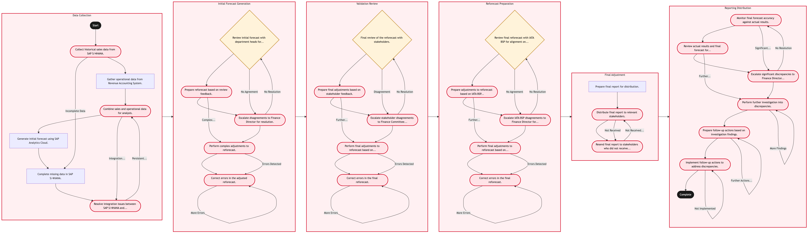

Updated 2026-08-21
Monthly Forecast and Reforecast Cycle
Process flow
Click to zoom

Process steps
▼
Phase 1 — Data Collection
6 steps
| Step | Activity | Role | System | Input | Output | KPI | Dec | Exc | Pain point |
|---|---|---|---|---|---|---|---|---|---|
| 1.1 | Collect historical sales data from SAP S/4HANA. | Financial Analyst | SAP S/4HANAA | Historical transaction records | Historical sales data report | Data retrieval time within 24 hours | N | Y | Inconsistent or incomplete data in SAP S/4HANA can lead to inaccurate forecasts. |
| 1.2 | Gather operational data from Revenue Accounting System. | Revenue Analyst | Revenue Accounting SystemC | Operational transaction records | Operational data report | Data retrieval time within 1 business day | N | N | Time-consuming process to manually reconcile data across systems. |
| 1.3 | Combine sales and operational data for analysis. | Financial Analyst | SAP Analytics CloudB | Historical and operational data reports | Combined data report | Data integration time within 2 business days | N | Y | System integration issues between SAP S/4HANA and Revenue Accounting System can cause delays. |
| 1.4 | Generate initial forecast using SAP Analytics Cloud. | Financial Analyst | SAP Analytics CloudB | Combined data report | Initial forecast report | Forecast generation time within 3 business days | N | N | Manual adjustments required due to complex rules and exceptions. |
| 1.5 | Complete missing data in SAP S/4HANA. | Financial Analyst | SAP S/4HANAA | Incomplete data report | Updated data in SAP S/4HANA | Data completion time within 1 business day | N | N | Manual input of missing data is prone to errors. |
| 1.6 | Resolve integration issues between SAP S/4HANA and Revenue Accounting System. | IT Support Analyst | SAP S/4HANA, Revenue Accounting SystemU | Error logs from integration tools | Resolved integration issues | Resolution time within 2 business days | N | Y | Persistent integration errors can halt the entire forecasting process. |
▼
Phase 2 — Initial Forecast Generation
5 steps
| Step | Activity | Role | System | Input | Output | KPI | Dec | Exc | Pain point |
|---|---|---|---|---|---|---|---|---|---|
| 2.1 | Review initial forecast with department heads for accuracy and alignment. | Financial Analyst, Department Heads | SAP Analytics CloudB | Initial forecast report | Reviewed forecast report | Review time within 2 business days | Y | N | Disagreements on forecast accuracy can delay the process. |
| 2.2 | Prepare reforecast based on review feedback. | Financial Analyst | SAP Analytics CloudB | Reviewed forecast report, feedback from department heads | Reforecast report | Reforecast preparation time within 1 business day | N | Y | Complex adjustments required for significant changes in forecasts. |
| 2.3 | Escalate disagreements to Finance Director for resolution. | Financial Analyst, Department Heads, Finance Director | Email/Meeting PlatformU | Disagreement points from review | Resolution plan | Escalation and resolution time within 1 business day | N | Y | Inefficient communication channels can slow down the process. |
| 2.4 | Perform complex adjustments to reforecast. | Financial Analyst | SAP Analytics CloudB | Reforecast report, feedback from department heads | Adjusted reforecast report | Adjustment time within 2 business days | N | Y | Manual adjustments are error-prone and time-consuming. |
| 2.5 | Correct errors in the adjusted reforecast. | Financial Analyst | SAP Analytics CloudB | Adjusted reforecast report, error logs | Corrected reforecast report | Correction time within 1 business day | N | Y | Repetitive manual corrections can lead to data inconsistencies. |
▼
Phase 3 — Validation & Review
5 steps
| Step | Activity | Role | System | Input | Output | KPI | Dec | Exc | Pain point |
|---|---|---|---|---|---|---|---|---|---|
| 3.1 | Final review of the reforecast with stakeholders. | Financial Analyst, Stakeholders | SAP Analytics CloudB | Corrected reforecast report | Approved reforecast report | Review time within 1 business day | Y | N | Stakeholder disagreements can delay the process. |
| 3.2 | Prepare final adjustments based on stakeholder feedback. | Financial Analyst | SAP Analytics CloudB | Approved reforecast report, stakeholder feedback | Final adjusted reforecast report | Adjustment time within 1 business day | N | Y | Complex adjustments require significant manual effort. |
| 3.3 | Escalate stakeholder disagreements to Finance Committee for resolution. | Financial Analyst, Stakeholders, Finance Committee | Email/Meeting PlatformU | Disagreement points from review | Resolution plan | Escalation and resolution time within 1 business day | N | Y | Inefficient communication channels can slow down the process. |
| 3.4 | Perform final adjustments to reforecast based on resolution. | Financial Analyst | SAP Analytics CloudB | Final adjusted reforecast report, resolution plan | Final reforecast report | Adjustment time within 1 business day | N | Y | Manual adjustments are error-prone and time-consuming. |
| 3.5 | Correct errors in the final reforecast. | Financial Analyst | SAP Analytics CloudB | Final reforecast report, error logs | Corrected final reforecast report | Correction time within 1 business day | N | Y | Repetitive manual corrections can lead to data inconsistencies. |
▼
Phase 4 — Reforecast Preparation
5 steps
| Step | Activity | Role | System | Input | Output | KPI | Dec | Exc | Pain point |
|---|---|---|---|---|---|---|---|---|---|
| 4.1 | Review final reforecast with IATA BSP for alignment on revenue recognition. | Financial Analyst, IATA BSP Representative | IATA BSP, SAP Analytics CloudU | Corrected final reforecast report | Aligned reforecast report | Review time within 1 business day | Y | N | Disagreements on revenue recognition can delay the process. |
| 4.2 | Prepare adjustments to reforecast based on IATA BSP feedback. | Financial Analyst | SAP Analytics CloudB | Aligned reforecast report, IATA BSP feedback | Adjusted reforecast report | Adjustment time within 1 business day | N | Y | Complex adjustments require significant manual effort. |
| 4.3 | Escalate IATA BSP disagreements to Finance Director for resolution. | Financial Analyst, IATA BSP Representative, Finance Director | Email/Meeting PlatformU | Disagreement points from review | Resolution plan | Escalation and resolution time within 1 business day | N | Y | Inefficient communication channels can slow down the process. |
| 4.4 | Perform final adjustments to reforecast based on resolution. | Financial Analyst | SAP Analytics CloudB | Adjusted reforecast report, resolution plan | Final reforecast report | Adjustment time within 1 business day | N | Y | Manual adjustments are error-prone and time-consuming. |
| 4.5 | Correct errors in the final reforecast. | Financial Analyst | SAP Analytics CloudB | Final reforecast report, error logs | Corrected final reforecast report | Correction time within 1 business day | N | Y | Repetitive manual corrections can lead to data inconsistencies. |
▼
Phase 5 — Final Adjustment
3 steps
| Step | Activity | Role | System | Input | Output | KPI | Dec | Exc | Pain point |
|---|---|---|---|---|---|---|---|---|---|
| 5.1 | Prepare final report for distribution. | Financial Analyst | SAP Analytics Cloud, Document Management SystemU | Corrected final reforecast report | Final forecast report | Report preparation time within 1 business day | N | N | Manual formatting and distribution can be error-prone. |
| 5.2 | Distribute final report to relevant stakeholders. | Financial Analyst, Stakeholders | Email/Meeting PlatformU | Final forecast report | Distribution confirmation | Distribution time within 1 business day | N | Y | Inefficient communication channels can slow down the process. |
| 5.3 | Resend final report to stakeholders who did not receive it. | Financial Analyst, Stakeholders | Email/Meeting PlatformU | Final forecast report | Distribution confirmation | Redistribution time within 1 business day | N | Y | Persistent distribution issues can delay critical financial planning. |
▼
Phase 6 — Reporting & Distribution
6 steps
| Step | Activity | Role | System | Input | Output | KPI | Dec | Exc | Pain point |
|---|---|---|---|---|---|---|---|---|---|
| 6.1 | Monitor final forecast accuracy against actual results. | Financial Analyst | SAP S/4HANA, Revenue Accounting SystemU | Actual financial data | Accuracy report | Monitoring time within 1 business day | N | Y | Inaccurate monitoring can lead to poor financial planning. |
| 6.2 | Review actual results and final forecast for discrepancies. | Financial Analyst | SAP Analytics CloudB | Accuracy report, final forecast report | Discrepancy analysis report | Analysis time within 1 business day | N | Y | Complex discrepancies require significant manual effort. |
| 6.3 | Escalate significant discrepancies to Finance Director for investigation. | Financial Analyst, Finance Director | Email/Meeting PlatformU | Discrepancy analysis report | Investigation plan | Escalation and investigation time within 1 business day | N | Y | Inefficient communication channels can slow down the process. |
| 6.4 | Perform further investigation into discrepancies. | Financial Analyst | SAP Analytics Cloud, Revenue Accounting SystemU | Discrepancy analysis report, investigation plan | Investigation findings report | Investigation time within 1 business day | N | Y | Manual investigation can be error-prone and time-consuming. |
| 6.5 | Prepare follow-up actions based on investigation findings. | Financial Analyst, Department Heads | Email/Meeting PlatformU | Investigation findings report | Follow-up action plan | Action planning time within 1 business day | N | Y | Complex follow-up actions require significant manual effort. |
| 6.6 | Implement follow-up actions to address discrepancies. | Financial Analyst, Department Heads | SAP S/4HANA, Revenue Accounting SystemU | Follow-up action plan | Action confirmation | Implementation time within 1 business day | N | Y | Manual implementation can be error-prone and time-consuming. |
Swim lanes
Financial Analyst1.1 1.3 1.4 1.5 2.2 2.4 2.5 3.2 3.4 3.5 4.2 4.4 4.5 5.1 6.1 6.2 6.4
Revenue Analyst1.2
IT Support Analyst1.6
Financial Analyst, Department Heads2.1 6.5 6.6
Financial Analyst, Department Heads, Finance Director2.3
Financial Analyst, Stakeholders3.1 5.2 5.3
Financial Analyst, Stakeholders, Finance Committee3.3
Financial Analyst, IATA BSP Representative4.1
Financial Analyst, IATA BSP Representative, Finance Director4.3
Financial Analyst, Finance Director6.3
Systems touched
SAP S/4HANAARevenue Accounting SystemCSAP Analytics CloudBSAP S/4HANA, Revenue Accounting SystemUEmail/Meeting PlatformUIATA BSP, SAP Analytics CloudUSAP Analytics Cloud, Document Management SystemUSAP Analytics Cloud, Revenue Accounting SystemU
Key performance indicators
- Data retrieval time within 24 hours
- Forecast generation time within 3 business days
- Review time within 1 business day
- Reforecast preparation time within 1 business day
- Monitoring time within 1 business day
Risks and control points
- Inconsistent or incomplete data in SAP S/4HANA leading to inaccurate forecasts.
- Persistent integration errors between SAP S/4HANA and Revenue Accounting System causing delays.
- Disagreements on forecast accuracy delaying the process.
- Complex adjustments required for significant changes in forecasts.
- Manual corrections prone to errors.
Air Canada Process Wiki — process and systems reference compiled from public sources
for IT Application Management and User Support pre-sales discovery.
Built 2026-08-21. Every system carries an evidence tier: tier C is an industry pattern and tier U is an open
question, and neither should be asserted as fact about Air Canada without confirmation in discovery.
Not affiliated with or endorsed by Air Canada. Air Canada, Aeroplan and Altitude are trademarks of Air Canada.